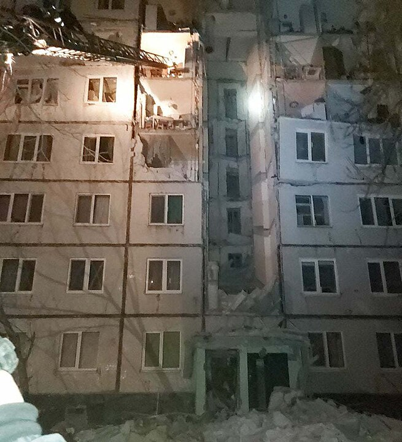

Історія Харкова
ГалереяГенеральна округа Харків охоплювала б довоєнні радянські області Харківську і Курську, а також південну частину Орловської області, тим самим виходячи далеко за межі північного кордону УРСР на територію РРФСР і тягнучись від північного краю Донбасу до центрально-російського промислового округу. Ландшафтно і географічно ця генеральна округа не утворювала б ніякої єдності, а включала б головним чином два типи ландшафту. Простір на північ від Харкова належить до центрально-російського високого і горбистого плато, обшир на південь від Харкова — до рівнини Дніпра. Тільки невеличку частинку округи на південному сході (у районі Ізюму) можна зарахувати до плато Сіверського Дінця. Генеральна округа Харків планувалася як одна з найбільших у райхскомісаріаті Україна: маючи площу близько 115 000 км² і приблизно 7,68 млн жителів, вона була би більша ніж Баварія, Вюртемберг і Баден разом узяті. На півночі генеральна округа межувала б із генеральною округою Тула у складі райхскомісаріату центральної Росії (загальна довжина північного кордону приблизно 20-30 км на північ від залізничної лінії Брянськ — Орел — Єлець). Західні кордони відокремлювали б генеральну округу Харків від генеральної округи Чернігів та генеральної округи Київ. Кордон проходив би переважно з півночі на південь і в більшості випадків був би відкритий, без природних рубежів. Тільки на південному заході від Брянська кордон пролягав би приблизно 50-60 км уздовж берега Десни. На південному заході і південному сході генеральна округа Харків межувала б із генеральною округою Дніпропетровськ та генеральною округою Сталіно. На півдні кордон би тягнувся вгору за течією Орільки до Орелі, різко повертав би на південний схід, досягаючи біля Александрополя найпівденнішої точки генеральної округи. Звідси кордон вів би, перетинаючи залізничну лінію Лозова–Слов'янськ і Донець, у північно-східному напрямку. Східний кордон проходив би з півночі на схід до Єльця, на короткому відрізку річки Дон, на схід від Задонська повернув би на південний захід, біля села Тербуни нинішньої Липецької області — на південь і далі йшов би верхньою течією Оскола, приблизно 20-50 км на схід, на південь. Це був би кордон з генеральною округою Воронеж.
Формально Харківщина належала з поч. 17 ст. до Московської держави, але тут не було жодної влади й осілого населення. Московські царі розсилали сторожу й розвідувальні групи з служилих людей, будували укріплення й оборонні лінії проти кримських татар та ногайців: «білгородська», «ізюмська» та «українська» лінії. Поставали перші поселення — слободи з російських поселенців, а ще численніші українські поселення втікачів з Гетьманщини й Правобережжя. У середині 17 ст. вони заснували ряд українських поселень на Харківщині (див. Слобідська Україна).
1655 року ватага українських козаків під проводом «осадчого» І. Каркача оселилася поблизу харківського укріплення. 1654–1655 pp. вважають датою заснування Харкова (Д. Багалій). Козаки збудували оселю довкола фортеці, що вже існувала раніше на височині між р. Харковом і Лопанню, оточеній лісами і болотами. Московський воєвода Селіфонтов поширив на них свою владу, але у внутрішні справи козацьких поселенців не втручався, і вони рядили свої справи за «черкаським звичаєм». Українські поселенці допомогли збудувати нове укріплення та несли оборонну військову службу. 1655 р. в Харкові жило бл. 600 служилих людей, а всього населення бл. 2000. Назагал Харків у 17 ст. був військово-оборонним форпостом та хліборобським містом. Частина мешканців займалася ремеслом і торгівлею і жила на території укріплення, але більшість оселялася в слободах навколо укріплення й займалася хліборобством. Селяни мали право користуватися землею, займалися ремеслами і зберігали козацькі вольності.
У 1660—1662 роках добудовано нове приміське укріплення, а в старій фортеці постали нові військ. (башти, брами, порохівня) й адміністративні («государев» двір й ін.) споруди та церкви. У 1670-х pp. фортеця занепала і почала називатися Старим містом, а острогом звалося нове укріплення, побудоване за воєводи Сухотіна. Харків збільшувався навколо фортеці, а його міська територія на початку 18 ст. поширювалася за pp. Лопань і Харків.
1799 постала окрема Харківська єпархія. Після суд. реформи 1867 X. став осідком суд. округи з окремою суд. палатою. З суспільнокульт. погляду переломовою подією в іст. X. було заснування 1805 заходами В. Каразина й укр. дворянства Харківського Університету, що змінив провінційне м. півд. Росії на важливий сх.-укр. осв. центр. При університеті застосувалися наук. установи, поставали нові вид., активізувалося культ. життя. У 19 ст. засновано у X. 4 хлоп'ячі гімназії та кілька дівочих сер. шкіл. 1873 відкрито ветер. інститут, що розвинувся з сер. ветер. школи, 1885 — Технологічний Інститут, в 1916 — Харківський комерційний інситут. На другу половину 19 ст. припадає відкриття ряду фахових шкіл: торг., технічної, залізничної, музичної, рисувальної, земської акушерської тощо.
Харків мав міське самоврядування. До 1870 членів міської думи обирали за становим порядком, а пізніше за майновим цензом. Розбудова міста тривала далі; зведено будинки: дворянського зібрання (1815 — 20, архітект Є. Васильєв), кадетського корпусу (1825 — 28), дзвіницю Успенського собору (архітект А. Тон), міський театр (1840 — 43), ряд торгових і приватних будинків. У стилі будівництва далі переважала приписана так звана «губернська архітектура». У другій половині 19 ст. споруджено корпус технологічного інституту (1879 — 85), будинок міської думи (1885).
У 1890-х pp. низку будинків збудував архітект О. Бекетов. З'явився стиль модерн, (теперішній мед. інститут, купецький банк, житлові будинки). Архітект К. Жуков збудував в укр. стилі будинок школи живопису і малювання (1913). Проте впорядкування м. було занедбане. До 1830 вулиці не були забруковані і в дощову погоду робилися непроїжджими. Харків мав славу «брудного міста». Потім вулиці почали мостити бруківкою; під кінець 19 ст. майже всі вони були забруковані. Вода з річок X. не була придатна до пиття, а водогін закінчено щойно 1881. 1912 — 13 поширено водогін і побудовано водонапірну башту для центр. вулиць; другорядні вулиці й окраїни м. користувалися .. колодязями. Щойно 1912 почали будувати каналізацію. Газове освітлення застосовано в 1880-х pp., а з 1898, почавши від окраїн м., — електричне. 1882 відкрито кінну залізницю, т. зв. конку, власником якої було з 1886 бельгійське акційне товариство; 1906 прокладено першу трамвайну лінію. Першу залізницю доведено до X. 1869, відтак прокладено через X. лінії: X. — Ростов і X. — Київ (1873), X. — Лозова і X. — Полтава (1875), X. — Балашов і X. — Вовчанське (1899).
Українські визвольні змагання
Влада у Харкові під час революції була в руках Тимчасового уряду та демократичних установ — губернатора комісара, міські думи, земств. Окремо творилися робочі ради, в яких переважали неукраїнські елементи, що намагалися перебрати владу в свої руки революційним шляхом, особливо після листопада 1917. Українці Харкова, репрезентовані в Українській Центральній Раді, гуртувалися в громадьскіх і культурні товариствах, головне з метою впливати на міські справи й українське населення провінції. У Харкові засновано Українську губернаторську раду, скликано з'їзди сел та представників «Просвіти» Слобожанщини й створено товариство «Рідна Школа». У Харкові з'являлися 1917—1918 тижневик «Рідне Слово», соціально-дем. газета «Робітник» (тричі на тиждень) та щоденник соціальному напряму «Нова Громада». У двох перших універсалах Української Центральної Ради не говорилося ясно, чи її автономна влада поширюється й на Харків, 3й універсал поширив її формально і на Харківщину без визначення кордонів. • У Харкові перебували й українізовані полки. Згідно спогадів М.Чеботаріва найбоєздатнішим з них був 2-й Український полк, створений шляхом Українізації 280го піхотного, який нараховував 2500 багнетів. Але близькість Росії, у якій владу перебрали більшовики, і Донбасу, де фактично вони захопили владу також, та слабість поміркованих українських і російських сил вирішили долю Харкова. Вже з кінця листопада 1917 до Харкова прибули червоногвардійці з Росії та збольшевизовані матроси з Прибалтики. Вони у спілці з місцевими більшовиками роззброїли 13.12. війська Центральної Ради та російські антибільшовитьскі сили; 24—25 грудня відбувся у Харкові з'їзд рад, який проголосив себе всеукраїнським та обрав радянський уряд України т. зв. Нар. секретаріат на чолі з Є. Медведєвим. Ось як про ці події згадує британський історик Роберт Конквест в своїй праці
16-18 грудня 1917 p. в Києві відбувся з'їзд Рад, на якому більшовики одержали тільки 11 % голосів. Тоді їхні делегати переїхали до Харкова, щойно зайнятого Червоною армією, і скликали там свій з'їзд Рад. Серед його делегатів переважали росіяни. 25 грудня 1917 p. з'їзд заявив про створення “радянського уряду” на чолі з Ю. Коцюбинським. 22 січня 1918 p. Центральна Рада проголосила Україну незалежною суверенною республікою, однак 12 лютого харківський маріонетковий уряд увійшов до Києва слідом за Червовою армією, а Центральна Рада переїхала до Житомира.[1]
Після Берестейського миру німецька армія й українські війська (серед ін. запор. полк під проводом П. Болбочана) 19. 4. 1918 звільнили X. від більшовиків. За гетьманської влади губерніальним старостою в Харкові був Петро Заліський. Серед ін. тоді створено гімназію ім. Б. Грінченка, дир. якої був М. Плевако, українізовано кілька ін. шкіл. Уряд закрив опозиційну газ. «Нар. діло». У листопаді 1918 короткочасно владу в Харкові захопили війська Директорії УНР, але 3.1.1919 місто знов опанували більшовики, і тут діяв сов. уряд України до 25.6, коли місто зайняли рос. білі війська ген. А. Денікіна, які перебували тут до 11.12.1919. Після перемоги червоних над Денікіном до X. повернувся третій укр. сов. уряд, і Харків став столицею УСРР.
Радянський період
Ранній СРСР
У Харкові знайшли свій осідок Всеукр. Центр. Виконавчий Комітет і Рада нар. комісарів, центр. органи КП(б)У, профспілок, сов. респ. організацій. Працювали центр. кооп. установи: Українбанк, «Сіль. Господар», «Добробут», Українкустарспілка та ін. З кін. 1920-и.х pp. їх обмежено в діяльності і на поч. 1930-х pp. закрито. На поч. 1920-х pp. були відкриті деякі чужоземні дипломатичні місії та консульства. УАПЦ очолював архієп. О. Ярещенко (1923 — 26). В Харкові з 1921 з'являлися «Вісті ВУЦВК», українізовано високі школи (Інститут Нар. Освіти, Інститут Нар. господарства, Ком. Університет ім Артєма й ін.). У зв'язку з частою реорганізацією високого шкільництва змінювалося ч. вищих шкіл: на поч. 1920-х pp. їх було бл. 10, у 1930 — 23 інститути, 1940 — 36 (понад 30 тис. студентів). 1926 реорганізовано давній технологічний інститут і на базі його факультетів створено окремі самостійні інститути: машинобудів., хіміко-технологічний, електро-техн. та ін. Лише після другої світової війни ці інститути об'єднано і створено Харківський Політехн. Інститут. 1932 відновлено університет. З 1920 року діяла в Харкові українська школа червоних старшин, яку закрито з розгромом українізації на початку 1930-х років.
З наукових установ працювали в Харкові:
- Наук. Комітет України,
- Сіль.-Госп. Наук. Комітет України,
- Іст. Архів,
- Центр. Статистичне Управління України,
- Центр. Архівне Управління УРСР,
- Всеукр. Агрономічне Товариство,
- Всеукр. Наук. Асоціація Сходознавства,
- Укр. Асоціація Марксо-Ленінських Інститутів та ін.
Цінну українознавчу працю провадили Укр. Наук. Досл. Інститут Географії та Картографії. Н.-Д. кафедра Історії України, Інститут Літератури ім. Т. Шевченка тощо. З 1920 діяли музеї: Харківський Всеукр. Іст. Музей, Музей Слобідської України ім. Г. Сковороди, Харк. Художній Музей. Працювали видавництва: Держ. Видавництво України, «Пролетарій», «Радянський селянин», кооперативні видавництва «Книгоспілка» і «Рух» (згодом ліквідовані). Широку діяльність розвинула Укр. Книжкова Палата.
Друга світова війна
Під час другої світової війни Харків був значно зруйнований. Радянська влада перед наступом німецьких військ частину заводів й установ евакуювала, інші зруйнувала. Німецька армійська група генерала К. Р. Рундштедта вступила до Харкова 25.10.1941. Бувши в прифронтовій зоні, Харків лишився під безпосереднім військовим управлінням. У місті діяла Міська управа (гол. ректор Політехнічного Інституту О. Крамаренко, якого пізніше німці розстріляли за неефективність врядування та за підозрою у саботажі; головою міста (обербургомістром) у 1942 став адвокат О. Семененко), почали творитися госп. установи (міський банк, обласна споживча спілка тощо), «Просвіта» (гол. В. Дубровський), діяло націоналістичне підпілля, як також Громадський Комітет (гол. В. Доленко), виходила газета «Нова Україна», та журнал «Літ. Засів». До відновленої УАПЦ 1942—1944 приєднався митрополит Т. Будловський.
Упродовж 22-місячної окупації Харкова німцями цивільне життя не унормувалося, населення терпіло від голоду і холоду; число мешканців Харкова зменшилося до 160 000. Німці розстрілювали і вішали запідозрених у співпраці з радянськими партизанами та націоналістичних діячів. Перший радянський наступ на Харків відбувся у лютому 1943, і місто було короткий час у сов. руках. Під час нової німецької окупації міським головою спочатку був відомий хімік П. Козакевич, але вже за короткий час влада перейшла до військової адміністрації, багато жителів було виселено. 23.08.1943 був встановлений червоний прапор на будівлю Держпрому, в цей день видано наказ про звільнення міста, що вплинуло на відзначання Дня звільнення міста 23 серпня. Остаточно війська генерала І. Конєва здобули Харків 30.08.1943 р.
Післявоєнні роки
Відбудова знищеного Харкова почалася ще за війни і тривала за наступних років, одночасно з реконструкцією й розростанням міста. Відбудовано ряд заводів, стали до ладу нові. Відновлено і поширено житловий фонд побудовою нових кварталів (Салтівка, Павлове Поле, Рогань, Олексіївка, Холодна Гора, Червона Баварія). За повоєнного часу покращав благоустрій міста: розпочато газифікацію приватних помешкань (проведено газ з Шебелинки), прокладено новий водогін з Краснопавлівки, збільшено трамвайні (тепер 33) маршрути, тролейбусні (36) і автобусні лінії (понад 50); річки змеліоровані. 1975 відкрито, метрополітен (1978 розпочато другу лінію) довжиною 18 км з 13 станціями (заплановано 3 лінії, разом 43 станції). Поширено торговельну мережу, освітні заклади та установи охорони здоров'я: відкрито кілька санаторіїв, будинків відпочинку в околицях Харкова. 1976 у Харкові діяло 70 лікарень з близько 60000 ліжок; лікарів — близько 7 000.
1980 Харків мав понад 2500 вулиць і провулків та 26 площ; серед них площі Дзержинського, Радянської України, Р. Люксембург, М. Тевелева, Повстання, Театральна, Залізнична; є кілька впорядкованих набережних. Харків тепер добре озеленене місто, має 110 парків і скверів; найбільші — Центральний парк ім М. Горького, сад ім. Шевченка, парк Артема, Лісопарк, Ботанічний сад.
Зросла роль Харкова як транспортного центру, з нього розходяться залізниці у 8 напрямах; найбільша станція — «Південна». Харків сполучений авіалініями з рядом міст України, СНД і Європи. Сучасний аеропорт збудовано 1954 року. Приміська і міжміська автобусна мережа має 290 маршрутів.
Кінець ХХ — початок ХХІ століття
У середині 1990-х років були затверджені прапор та герб Харкова, перейменована низка вулиць та інших об'єктів. У 1995 році була відкрита перша ділянка Олексіївської лінії метро, почалося будівництво нових храмів, з'явилися нові пам'ятки, дельфінарій та були реконструйовані численні об'єкти інфраструктури. Місто розпочало активну міжнародну співпрацю, отримавши велику кількість нових міст-побратимів, першим з яких за часи незалежності, 14 червня 1993 року став китайський Тяньцзінь.
У 2011 році Харків був визнаний найкращим містом України за рівнем життя разом з Київом[2]. У 2012 року Харків був одним з міст, які приймали Чемпіонат Європи з футболу: на стадіоні «Металіст» відбулося 3 матчі Групи В.
У 2013 році, під час Революції гідності, протестувальники за євроінтеграцію України 19 листопада зібралися на площі Свободи. Наступного дня протест перемістився до пам'ятника Тарасу Шевченку[3]. Після того, як 22 лютого 2014 року президента Віктора Януковича було усунуто з посади, він мав намір приїхати до Харкова, щоб очолити з'їзд депутатів обласних рад від «Партії регіонів», але відмовився від цієї ідеї. 23 лютого у Харкові починаються виступи сепаратистів та їх сутички з Євромайданом. У квітні проросійські провокатори незаконно намагаються проголосити так звану «Харківську народну республіку»[4]. У травні подальші спроби проросійських сил йдуть на спад. 28 вересня 2014 року у Харкові відбувається повалення пам'ятника Леніну.
Російсько-українська війна
24 лютого 2022 року, близько 5:00 (UTC+2) російські окупанти почали обстріли Харкова. Вночі проти 26 лютого були випадки прориву оборони; кілька ворожих танків зайшли у Харків, були знищені і контроль відновлено українськими військами.[5]
Надвечір 25 лютого росіянами було завдано удар по обласній дитячій лікарні та Центру служби крові (що знаходяться на вулиці Клочківській) реактивним снарядом з касетною бойовою частиною. Загинув один чоловік, який чекав на свою чергу стати донором крові[6][7]. Голова Харківської ОДА повідомив: кидаючи посеред дороги ворожу техніку, українським військам здаються групи по 5-10 осіб. Як тільки бачать хоча б одного представника ЗСУ — здаються[8]. Для окупантів була створено ілюзію, що місто майже кинуте напризволяще та стане легкою здобиччю. Після цього окупантам дозволили зайти вглиб міста і почали ліквідовувати[9]. У Харкові проводиться зачистка від російських ДРГ і військових, які потрапили до міста[10]. Внаслідок боїв російські окупаційні війська втратити кілька автомобілів Тигр та понесли серйозні втрати в живій силі. Українські війська втратили один БТР-4. 28 лютого українські військові знищили російських окупантів та їхню техніку під час оборони Харкова. Втрати ворога — 15 вбитих, 4 полонених.[11] В пообідню пору Харків зазнав масованого удару «Градами» — десятки загиблих і сотні поранених;[12] серед загиблих — 3 дітей[13]. 1 березня росіяни завдали ракетного удару по Майдану Свободи[14]. Постраждало 6 людей, серед них — дитина[15]. Була частково зруйнована будівля
1 березня росіяни завдали ракетного удару по Майдану Свободи[14]. Постраждало 6 людей, серед них — дитина[15]. Була частково зруйнована будівля облдержадміністрації. З-під завалів врятували шестеро осіб, поранення отримали близько 20[16], загинули 29[17]. Постраждали й сусідні будівлі, в тому числі консульство Словенії[18] та Державний інститут з проектування підприємств коксохімічної промисловості[19]. Стріляли з російського Бєлгорода[20], з стратегічного бомбардувальника-ракетоносця Ту-22, який випустив по Харкову 16 ракет класу «повітря-поверхня»[21]. Вранці 2 березня російські окупаційні війська вдарили по корпусу економічного факультету Харківського національного університету (будівлю зруйновано, на місці масштабна пожежа[22]) і сусідній будівлі обласного управління поліції та СБУ. Загинуло 4 поліціянтів.[23] Одна крилата ракета влучила у будівлю міської ради[24]. Ракетним ударом був частково зруйнований і сусідній Палац праці. При цьому постраждала розташована неподалік наукова бібліотека університету імені Каразіна[25]. Російський снаряд влучив в Успенський собор, де укривалися від ворога люди[26][27]; пошкоджені обстрілами Антоніївська церква та церква Жон Мироносиць[28]. Також окупанти завдали ракетного удару по дитячому майданчику[29].
Обстріли Харкова продовжилися. Організація Об'єднаних Націй заявила, що отримала докази використання Росією касетних боєприпасів у Вугледарі та Харкові[30][31]. Сили спеціальних операцій ЗСУ в Чугуївському районі знищили колону військової техніки окупанта. За інформацією Штабу оборони, серед знищеної техніки окупанта — танки, бойові машини та паливозаправники[32]. Російські окупаційні війська обстріляли будівлю спортивного комплексу «Акварена», поруч з яким немає жодного військового об'єкта[33].